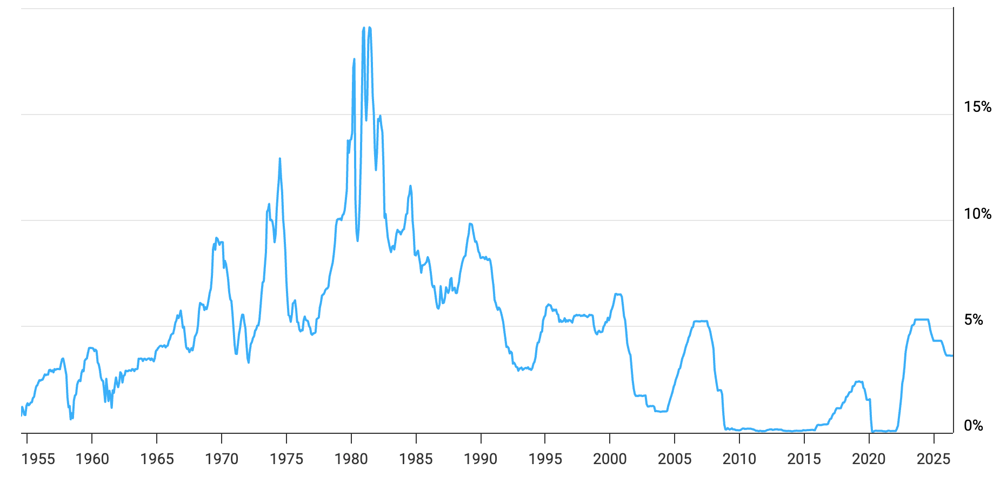

My personal laptop is dying, and the replacement that sat in my online shopping cart for two weeks has just gone up in price by nearly 35 per cent. Damn you, data-center buildout. Hyperscaler earnings calls are around the corner, so I am waiting to tally the next set of numbers against the markers I made last quarter and hoping the price-to-earnings pulls up enough to soften the price increase I am likely to encounter across consumer electronics over the coming year. It is a small and selfish way to enter a very large capital cycle, though it is also what made the cycle feel tangible to me. Money being directed toward chips, power and data centers eventually appears in ordinary life as tighter component supply, higher prices and a laptop purchase downgraded in core count.
At roughly the same time, I reached the penultimate chapter of The Power Law, my third book by Sebastian Mallaby. Interestingly he writes:
During the first decade of the twentieth-first century, investors had responded to low interest rates by reaching for yield the Wall Street way: they had loaded up on subprime mortgage debt, which paid a few percentage points above the normal interest rate. When this strategy ended in disaster in 2007-2008, investors reached for yield the Valley way: they bet on private tech companies. As with the subprime wagers, the idea was to take extra risk for extra reward. But unlike the subprime wagers, tech bets had a chance of generating durable profits. Fortuitously, the financial crisis coincided with the advent of smartphones, cloud computing, and the mobile internet, setting up an opportunity to build brilliant businesses atop the new platforms: it was the perfect moment to switch capital from financial engineering to technology.
The passage appears almost in passing, yet it sent me straight to my notes. I had recently finished the final build of my internal note-taking tool, aptly named carry, and this became its first published use. What I wanted to understand was simple: when an enormous amount of capital rushes toward a new technology, what remains after the financing cycle turns? Mallaby's distinction between subprime debt and technology investing points toward an answer, though I think the deeper dividing line is the productive capacity left behind. That is the argument I am trying to work through here, using the current AI buildout as the test case.
“Reaching for yield” sounds like investors periodically becoming adventurous. The larger pools of money often face a more mechanical problem. A pension fund with a seven per cent return assumption, an insurer carrying guaranteed liabilities and an endowment governed by a spending rule all have future payments to meet. When safe assets earn far less than those targets, remaining entirely in safe assets creates a widening shortfall and, over enough time, a slow insolvency. These institutions can raise contributions, reduce promises or accept lower expected returns, and some do. Cheap money still changes the relative price of prudence and makes a move up the risk curve easier to justify. In everyday terms, this is the liability arithmetic behind yield-seeking capital: the money needs to earn more than government bonds offer, so it searches for another destination. The pressure has recurred across eras. The destination changes, and the destination determines what remains once the search ends.
Did the money create an asset that can keep producing useful services after its original owners or financiers are gone? Some waves mainly inflate the price of existing claims on future income. The American foreign-bond boom of the 1920s largely followed that pattern. German municipal and Latin American sovereign paper was sold to households hungry for higher returns, while part of the proceeds passed through the fragile circle of war reparations and debt repayments linking Germany, France, Britain and the United States. Wall Street loans to Germany moved onward as reparations, then returned to Washington through Allied war-debt payments. The machine seized when fresh American lending dried up. The petrodollar cycle of the 1970s repeated the broad mechanism: oil surpluses flowed into large banks, the banks lent onward to sovereign borrowers, and the arrangement fractured when interest rates rose and debt service became unmanageable. Some of this money financed utilities, railways and industrial plant, which is an important qualification. Productive assets can still be ruined by weak funding structures, currency shocks and political instability. The broad lesson is that claims against future income disappear quickly when the income and refinancing beneath them fail to arrive.
Infrastructure booms leave a different inheritance. The British railway mania of the 1840s destroyed many shareholders because promoters projected traffic that the early network could never support. The track survived those shareholders and carried the economy for generations. The venture boom of the 2010s produced a similar separation between the returns earned by a particular vintage of investors and the value of the capacity created. Many companies failed, many valuations collapsed, and the combination of smartphones, cloud computing and the mobile internet remained available for later businesses to build upon. Mallaby's distinction is therefore sound, though I see it as one instance of a wider rule. The financiers can be wrong about price, timing and ownership while being right about the importance of the technology. What endures is the added productive capacity, often transferred to later owners at a much lower cost.
The late-1990s telecom boom is the most useful precedent for the AI buildout because both sides of the mechanism appeared together. The roots of Mallaby's story begin with semiconductor pioneers and early venture investors, then move through software and the internet. A whole generation of transformative companies became possible because the fibre and telecom infrastructure of the late 1990s already existed. Much of that fibre sat dark for years, installed and waiting for demand. Investors were burned when the bubble burst, and the capacity was gradually absorbed over the following decade at a fraction of its original construction cost. Cheap, widely available connectivity then supported powerful new businesses across sectors and geographies. The financing around the boom was often circular. Equipment makers such as Lucent and Nortel extended loans to customers that used the money to buy their equipment, allowing sellers to record revenue from demand partly created on their own balance sheets. A portion of the market was therefore being supported by sellers financing buyers. That structure collapsed quickly and destroyed much of the capital that created it. The fibre survived. The financial cycle and the useful life of the infrastructure resolved on entirely different timelines.
That history gives the essay its reason for being. I am less interested in declaring the AI boom real or excessive than in asking what kind of excess it may create. The productive-capacity test needs one refinement here: a physical asset can survive a correction and still have been built at the wrong price, in the wrong location or too early. Railways, electricity networks and telecom systems all passed through periods in which the long-run thesis proved correct while the marginal investment earned poor returns. A technology can be transformative and simultaneously overbuilt. Inside a boom, genuine customer demand and demand generated by the investment cycle itself are difficult to separate. Cloud providers order chips because they expect usage to rise; model companies raise money because more compute lets them expand; infrastructure providers build because those companies are expanding; the additional capacity enables new applications that appear to validate the original forecast. Some of this is the normal development of a general-purpose technology. Some of it may be the buildout creating the projections used to justify more buildout. The distinction usually becomes visible when financing slows.
When I look at the current AI cycle, the telecom pattern appears at a much larger scale. The largest hyperscalers are spending hundreds of billions of dollars on chips, data centres, networks and power. The exact quarterly totals matter less to me than the direction and concentration of the spending: a small group of companies is building infrastructure at a pace that would have sounded implausible a few years ago, while a small number of model companies absorbs an extraordinary share of venture funding. Strategic investors, chip vendors, cloud providers and model companies increasingly finance one another or sign long-term commitments that support the next round of construction. A chipmaker can invest in a company that buys chipmaker's hardware; a cloud provider can invest in a model company that commits to buying its compute; a model company can use the resulting capacity to raise another round. These arrangements may be necessary while an ecosystem is being assembled ahead of mature end markets. They also make it harder to tell how much demand comes from paying users and how much comes from participants funding the customers who buy their products. That measurement problem is the present version of telecom vendor financing.
The source of the money also changes the mechanism. Railways, fibre and much of the 2010s venture cycle were financed by outside savings searching for returns. The core AI buildout is funded by the operating cash flows of a few exceptionally profitable companies with entrenched positions in search, cloud computing, advertising and enterprise software. Their compulsion is competitive. Hyperscalers believe that insufficient capacity could leave them structurally disadvantaged in a platform transition. Every board may therefore be acting rationally while the industry collectively builds more capacity than the eventual market can support at attractive prices. Outside capital still matters through bonds, private credit, special-purpose vehicles and sovereign-backed funding, especially around model companies and infrastructure projects. This division also shapes how a correction might spread. The leveraged edges would likely crack first and most visibly. The hyperscalers can continue spending for longer because their existing businesses fund the construction, and boards will probably reduce spending only when conviction weakens or the cash flows supporting it come under pressure. That endurance may smooth the cycle or allow the excess to grow beyond the point at which an externally financed boom would have stopped.
The assets themselves have very different useful lives. Power generation and transmission can serve the economy for generations. Data-centre shells last for decades. Electrical systems, cooling equipment and network connections can be repurposed over long periods. The accelerators at the centre of the current spending age much faster as new generations arrive and make older hardware less attractive. Company disclosures already reflect this split: a large share of current infrastructure spending goes into servers and chips with relatively short economic lives, while the rest goes into facilities and networks expected to earn over much longer periods. This makes the AI buildout more complicated than fibre, which could sit dark at low carrying cost and remain useful years later. A correction could leave behind abundant power, buildings and connectivity that later companies acquire cheaply, while a large share of the silicon loses value before new users appear. A failed software company from the 2010s often left code and employees. A failed AI company may leave leased compute obligations and specialized hardware whose resale value depends on another user arriving before obsolescence. The same capital intensity that places this boom on the productive side of the test also raises the cost of building in the wrong place, at the wrong time or at the wrong price.
Utilization is the bridge between physical capacity and financial value. Here I mean something ordinary: are these expensive assets used often enough, and for services valuable enough, to repay what they cost? The largest cloud providers report strong demand and capacity constraints, while economy-wide adoption remains early and uneven. Model-company revenues are growing quickly, yet infrastructure spending is growing from a much larger base. The gap can close if AI diffuses through software, industry, science and consumer products before the hardware ages out. It could also close through applications that are currently difficult to imagine. Consumer robotics is one possibility I keep returning to, partly because cheap compute, mature models and abundant infrastructure could finally make it practical. The eventual winners may operate in categories that barely exist today, just as the companies that absorbed cheap fibre in the 2000s were rarely the telecom firms that financed it. Telecom offers the caution here. The technology succeeded completely, while much of the capital that financed the first construction earned poor returns because near-term buyers could not support the structures built around them. Technological success and financial success can separate: the infrastructure may become indispensable even as a large share of the capital that built it performs badly.
The post-2022 interest-rate environment adds another layer. Safe assets began paying meaningful returns again, which should have reduced the pressure to search elsewhere. Some of that capital moved into private credit, where funds make loans directly and values are updated less frequently than publicly traded debt. Losses can therefore surface gradually through write-downs, with no immediate public market price to expose them. A growing share of this lending now finances data-centre and power construction, tying a modern yield-seeking channel directly to productive infrastructure. The migration also reflects practical changes in banking regulation and borrower demand for tailored financing, so it cannot be reduced to a single story about investors chasing returns. It does suggest that institutional return targets adjust slowly and that the search for higher yields can outlast the low-rate regime that encouraged it.

The longest frame is useful because Mallaby wrote from inside a four-decade decline in interest rates that made return scarcity feel normal. Several forces now pull in another direction: aging populations drawing down savings, deglobalization raising input costs, defence and energy programmes demanding investment, reshoring absorbing capital and government deficits competing for private savings. A persistently higher-rate world would weaken the original pressure to move up the risk curve and make the period from the early 1980s to 2021 look more historically unusual. Another path is also plausible. Heavily indebted governments have historically held borrowing costs below economic growth and directed savings toward favoured sectors. The United States used a version of this approach in the 1940s, allowing public debt to shrink in real terms while limiting what savers could earn. A modern version would bring yield-seeking capital and industrial policy closer together. Sovereign investment in AI, national compute programmes and supply chains shaped by export controls already point in that direction. There is also a more optimistic possibility with little historical precedent. If AI genuinely raises productivity across the economy, it could increase the return on capital and improve yields on safer assets, gradually dissolving the scarcity that helped fund the boom through its own success.
I could be wrong about the inheritance. The buildout may be too specialized, the chips may age too quickly, or demand may settle below the levels required to support what is being built. My own view is that the most likely outcome is layered. Some financing structures will unwind and some investors will earn poor returns. A large amount of short-lived hardware will be written down. The power, data centres, networks and operational knowledge will remain, and later companies may acquire or use them far more cheaply than the firms building them today. Those later winners may be robotics companies, industrial platforms or businesses in categories that are still difficult to name. The technology can become indispensable while much of the capital that financed its first construction performs badly. That is the point I wanted to extract from Mallaby and test against the laptop price sitting in my cart: the lasting consequence of a boom is often determined by what the money physically became.